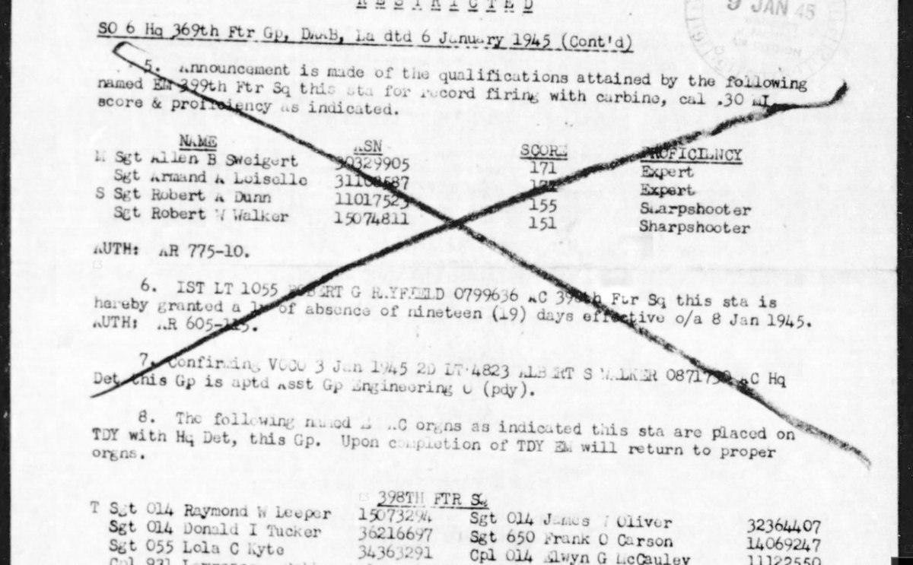
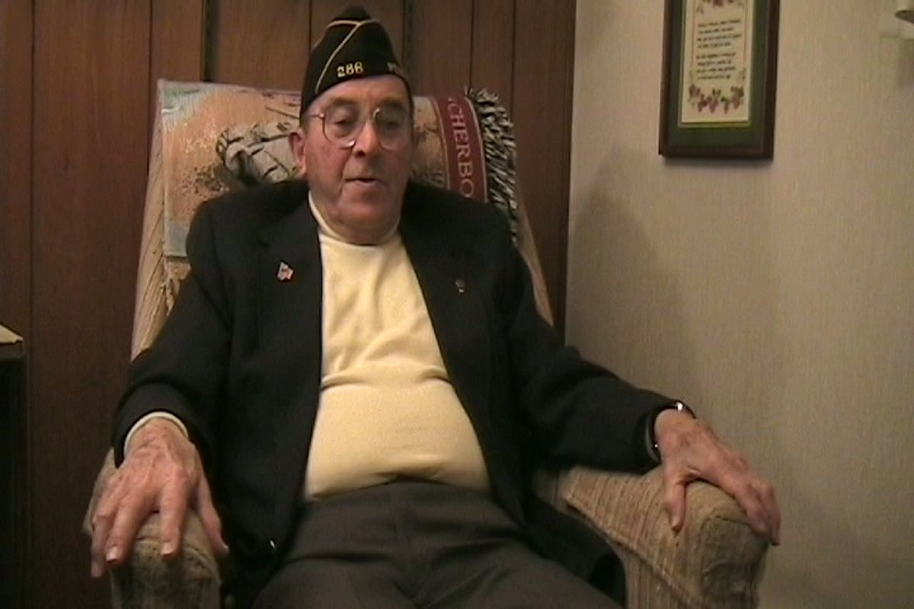
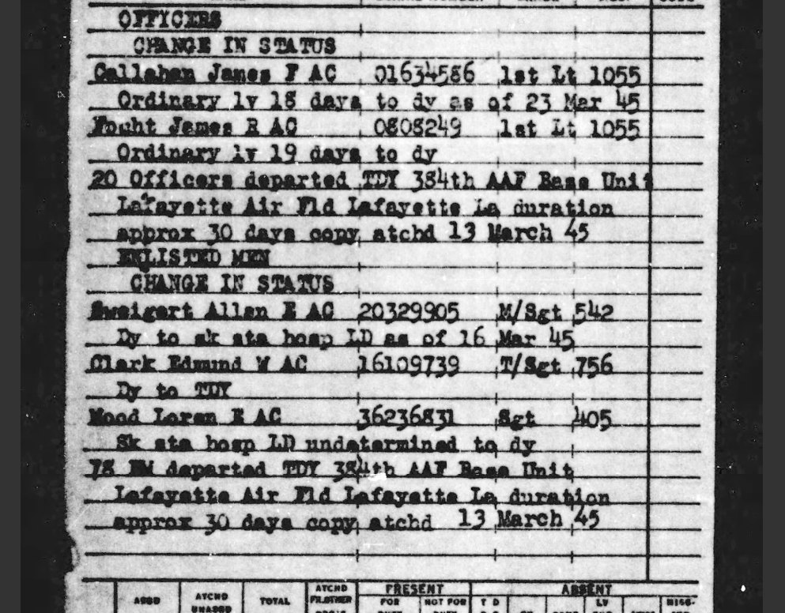
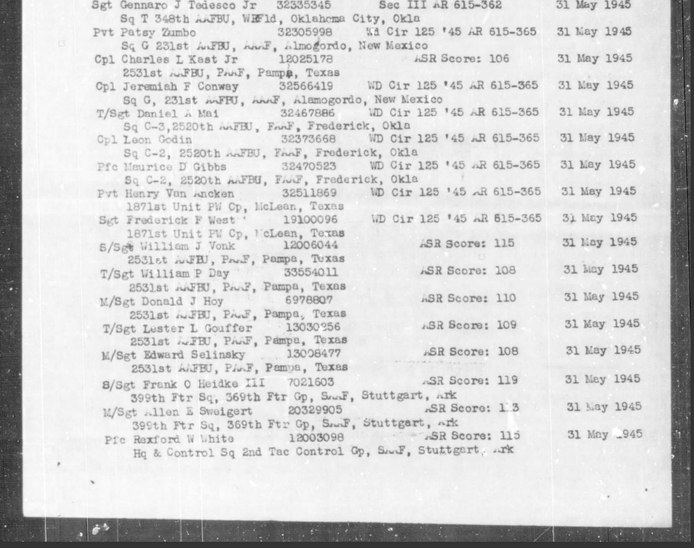
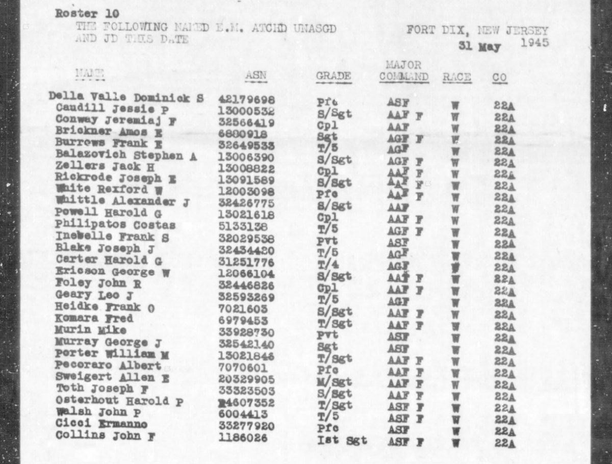

Type two letters or more to filter to the passages that mention it. Press Enter to step through them, Shift+Enter to step back, Esc to clear.
J
I'll go from, uh, you just got married. Just wrap it up.
A
Okay, like I said, we got married a week after I came home. And what they did when we got home, they gave us immediate, what they called a 21-day delay en route. In other words, 21 days of vacation. We went on a honeymoon for a week. We couldn't go too far because, uh, well, car, and we drove, we drove around, went in, not too far. Spent some night, places here and there, and different friends we knew. And then we had to report a hotel in Atlantic City for reassignment. Well, this, this was just a, like a continuation of the honeymoon because it was, it was really, it was really great. We, we, there were all kinds of shows we could go to, uh, dances, uh, uh, we got a kick out of, uh, one of the shows, I don't know, I don't know if you remember or ever heard of the song, Begin the Begin. Yes. Okay. So they- I like that song, actually. Okay. So they, they did this and they had a, a crew come out with mops, mops and booms on the stage. And they... They substituted the words when they cleaned the latrine and it was, it was a riot. And then it was a, a case of, uh, well, one, one of my buddies, he is from Massachusetts. and everybody was wondering where we were going to be sent, uh, and they told us, uh, we will attempt to send, to place you as near to home as possible. We had to go in for interviews and, uh, they asked me, you know, I said, uh, you know,
“They substituted the words when they cleaned the latrine, and it was a riot.”Allen E. Sweigert
J
where would you like to be stationed?
A
So I, I had thought about it and I mentioned three different, three different places, uh,. uh, one in New, one in New York, one was in, uh, Washington, uh, uh, or in that area and I, I don't know where the other one was, uh, all local, you know, uh, in the next, uh, United States. And, uh, went back up for the, the re, the re... Uh-huh. …re, the return of the reviewer, these request, and he says, we can't, we can't send you, they don't have any openings any of those places you asked for. He said, would you like to be stationed here in Atlantic City? And I had never thought of that, and I said, yeah, that's all right. He said, well, if, if we can get you in here could you have to be reduced two grades in your rank? I says, no, no thank you. I says, I worked hard to get up there. I'm not going to give it away that quickly. quick. I said, we'll see what we can do. So I guess it was a day or two later, my one buddy come back. He says, oh God, he said, it's just posted, Don. You know where you're going? No, I haven't looked at the bulletin board. He says, you're going to DeRidder, Louisiana. Well, isn't that fine? I said, that's really close to home. And one guy, and then he says, I don't know where I'm going yet. And then backtrack a little bit. One of the guys in our tent was from Coffeyville, Kansas. And we used to be kidding him all the time, especially this buddy of mine used to be kidding a guy about this Coffeyville, Kansas. By God, we went down to go to the show that night and looked at the bulletin board. And he said, the following men will report to Coffeyville, Kansas. Who's on there but Henry Miller. Oh my God. And we went back up and met Hank Comadon, he and his wife. And Hank, you're posted down there in the bulletin board. You know where you're going. And I had a big grin on my face. He says, no, no, He says, that's impossible. No, no. And there he found out he's going to Coffeyville. Oh God, that was funny. So I guess a day or two
“I worked hard to get up there. I'm not going to give it away that quickly.”Allen E. Sweigert
J
later, why?
“We left Atlantic City and I got a board train and went to DeRidder, Louisiana. Got there in the dark, at nighttime, dark, raining, cold.”Allen E. Sweigert
A
We left Atlantic City and I got a board train and went to DeRidder, Louisiana. Got there in the dark, at nighttime, dark, raining, cold. I get in the barracks, I feel better. I didn't have barracks, I had tents. So they were not set up properly to handle people, handle a number of people there. And even in the mess wall, I mean, they'd be running out of food. And it was not very, very good at all. And then I had to go for an interview. And some major is interviewing me. And he says, now look, he says, forget the rank. He says, I just want you to talk as whatever comes in your mind. And I said, well, I said, this, I find out this base is a air raid warning school. Mainly, yeah. He says, I said, but the, the, it only calls for,. one master sergeant. And I'm well aware that there are five of us here in this group that came back from overseas, different squadrons. I says, he says, well, he said, we'll give you some schooling and then you'll compete for the position. I said, well, that's not fair. I says, people who are doing that for years, and then somebody's going to get a crash course in it. That's not fair at all. Well, all right. He says, well, what would you like to do? I says, you asked me to talk whatever comes in my mind. Yeah. I said, I'm going to get the hell out of here. This, them words. He said, where'd you like to go? I says, back into bombardment. Well,. he says, I don't know. We don't have a bomb outfit on the, on the, the base. We have fighters,. fighter squadron. Good enough. He said, let me see what I can do. And on the phone, he called up somebody. He says, I got a, my number, like my,. what there's class test. We've got a 501 here. I'd like to be reassigned. Do you have, do you have any openings? You have three of them. Oh, good. He says, sure. Well, I got one here. He wants to get back into, the radio man wants to get back into bombardment or fighters will be fine. Okay. I'll send him over. And I went over and I got in the. 399th fighter squadron, 369th fighter group. And I got over there and all that was kind of ticklish because I come in as a master sergeant. And the guy that was in charge was a tech sergeant. So immediately I outranked him. And it wasn't too friendly, uh, because, uh, the communication officer was a, was a Mexican descent and he was pretty friendly with his motherland, but. it went, it went okay. Uh, some of the things I, I had them do, they, they didn't like, but, uh, I had the backing of the, the CEO. So everything was all right. It worked out good. I had a good time there. Good bunch of guys worked out. The only thing is as soon as I know sooner got there. And then, uh, I got, I got, uh, vacation time real quick. I leave right quick. I come home and my wife says, I said, do you want to go along back with me? I have, uh, two, uh, two weeks. Go off, go along back. Okay, great. We made, we started out, we got back to New Guinea, okay, New Guinea, back into DeRidder, got in the hotel. I wasn't feeling good at all. Next day, somehow or another, I get back to the base and I wound up in the hospital, malaria. She was stuck down there, what, in the hotel, what should have been a, a nice vacation time. She was stuck in the hotel. She would come out to the base every, every day. She would come out every day to visit me and, uh, there I am in the hospital. And, uh, the, the day, the day before I got out of the hospital, that squad, the outfit moved from DeRidder. up to, uh, Stuttgart, Arkansas. So I got out of the hospital, spent the night in the hotel at DeRidder, and the next day we were on the train, uh, coming up the, I got off at the, I got off at the, at Little Rock. I got off at Little Rock, Arkansas, off the train there. Gram kept going home.




“People who are doing that for years, and then somebody's going to get a crash course in it. That's not fair at all.”Allen E. Sweigert
“I said, I'm going to get the hell out of here.”Allen E. Sweigert
“I come in as a master sergeant, and the guy that was in charge was a tech sergeant. So immediately I outranked him. And it wasn't too friendly.”Allen E. Sweigert
“She was stuck down there in the hotel, what should have been a nice vacation time.”Allen E. Sweigert
A
That's with a bunch of guys there at, uh, and at Stuttgart. Uh, it was, it was nice. It was, but I, I wound up in the hospital again there with malaria. Hmm. Spent another weekend there. And then in June, June or, yeah, either May, May the 30th or, or in June, May, I guess it was in the, in the May or June, uh, uh, I got noticed that I was, was going to be discharged. Go to, go to Fort Dix to be discharged. I had a number of points of need and everything. And the night before I was to leave, I felt this coming on again. Malaria. Do you want to go to the hospital? I said, nope. I'm not going to the hospital, because then I'll be stuck here for another couple of weeks. I said, this way, I'm on my way home. I'm not going to stop. I'm going to... So I laid down. I got the fevers and the chills. It lasted about an hour and a half or so. The guy said, are you going up to Chau? I says, no, not now. I said, I'll get something later. I, she says, well, we're going, are we going to the movies? I said, I'm going to go with you. And they come back from Chau. They say, how do you feel? I says, oh, a lot, a lot better. I says, we'll go to the movies. So I did. I went to the movies that night. Next day, I'm on the train coming home. That's it. Got into Fort Dix. Spent, I guess, two or three days there. Finally got the papers all cleared. Had another interview. Do I want to reenlist? No, I don't think so.




“I'm not going to the hospital, because then I'll be stuck here for another couple of weeks. I'm on my way home. I'm not going to stop.”Allen E. Sweigert
A
And just, all I need now is just that final wrap-up of, you know, after everything, you know. Okay. You went on, built your house, had two children. Oh, man. And, and at that time, what was that, Zalcoa now, was some, they were processing all material that was brought back from the war zones and everything, and getting everything. redistributed through there. And I got a job over there. I worked over there for two or three weeks. And then I went to Chicago to a radio and electric school. And when I got out of there, I worked for a radio man, a radio distributor in Chicago for a while. And then I come home to start up my own business and radio repair in Persona. And for a while, and then went to work at Alcoa. Worked at Alcoa for about 30 years until the plant shut down. In the meantime, two sons, one grandson and one granddaughter. We are a fine group.
“Worked at Alcoa for about 30 years until the plant shut down.”Allen E. Sweigert
“In the meantime, two sons, one grandson and one granddaughter. We are a fine group.”Allen E. Sweigert
J
And anything else you want to add? Anything at all? If not, that's fine.
“You just can't help but sort of relive a lot of your things that you did.”Allen E. Sweigert
A
No, you just can't help but sort of relive a lot of your things that you did. Lots and lots of good memories in the 80-some years. Good.
“Lots and lots of good memories in the 80-some years.”Allen E. Sweigert